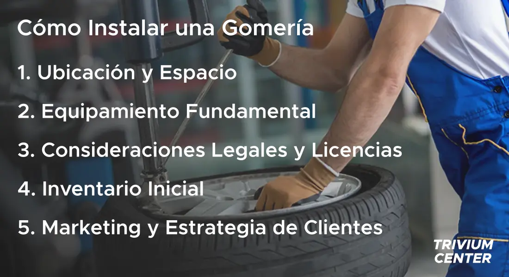

Si estás pensando en abrir tu propia gomería, ¡felicidades! Este es un negocio con una demanda constante y oportunidades de crecimiento.
1. Ubicación y Espacio
Lo primero que debes considerar es la ubicación de tu gomería. El espacio debe ser accesible y estar cerca de áreas transitadas, ya que esto facilitará la llegada de clientes. Busca un local con suficiente espacio para operar cómodamente, tanto en el exterior como en el interior. Un taller de tamaño promedio debería contar con al menos 80-100 metros cuadrados para poder manejar varios vehículos simultáneamente.
2. Equipamiento Fundamental
El corazón de cualquier gomería está en sus equipos. Contar con la maquinaria adecuada no solo garantiza la eficiencia del trabajo, sino también la seguridad de los vehículos y los empleados. A continuación, los equipos esenciales para iniciar una gomería:
a) Desarmadora de Neumáticos
Esta máquina es fundamental para quitar y montar neumáticos en las llantas. Dependiendo del tipo de vehículos que planees atender (autos, camionetas, motos, etc.), deberás elegir un modelo que se ajuste a las diferentes medidas de llantas. Es recomendable optar por una desmontadora semiautomática o automática que agilice el proceso y minimice el esfuerzo manual.
b) Balanceadora de Ruedas
Después de montar los neumáticos, es crucial balancear las ruedas para evitar vibraciones o daños en el vehículo. Una balanceadora electrónica es imprescindible para garantizar un servicio preciso. Los modelos modernos permiten una lectura rápida y exacta, lo que mejora la calidad del servicio y reduce el tiempo de espera para los clientes.
c) Elevador de Autos
El elevador es una pieza clave para poder inspeccionar y reparar partes de la suspensión, frenos y, por supuesto, los neumáticos. Los elevadores de tijera son una opción popular en gomerías debido a su versatilidad y bajo consumo de espacio. Sin embargo, también puedes considerar un elevador de dos columnas si tu taller cuenta con suficiente espacio y quieres ofrecer una mayor gama de servicios.
d) Compresor de Aire
Un compresor de aire es vital para inflar los neumáticos y operar herramientas neumáticas, como las pistolas de impacto. Asegúrate de adquirir un compresor con suficiente capacidad (mínimo 200 litros) para manejar varias herramientas de manera simultánea sin pérdida de potencia.
e) Lava Llantas y Alineadoras
Aunque no son estrictamente necesarios desde el inicio, estos equipos pueden ayudarte a ofrecer servicios adicionales y destacarte frente a la competencia. El equipo de alineación es particularmente útil para garantizar una vida útil prolongada a los neumáticos y mejorar la seguridad en carretera.
3. Consideraciones Legales y Licencias
Antes de comenzar a operar, es importante cumplir con todos los requisitos legales. Esto incluye:
- Licencias Comerciales: Consulta en el municipio local qué tipo de permisos y licencias necesitas para abrir una gomería.
- Habilitaciones de Seguridad: Como manejarás maquinaria y vehículos, deberás cumplir con normas de seguridad laboral, señalización adecuada y contar con matafuegos en el taller.
- Seguro de Responsabilidad Civil: Para proteger tu negocio y a los clientes, es recomendable contar con un seguro que cubra accidentes o daños involuntarios a los vehículos.
4. Inventario Inicial
El inventario de neumáticos es crucial, ya que los clientes buscarán diversas opciones en cuanto a marcas y tamaños. Considera comenzar con un stock de neumáticos nuevos de las marcas más demandadas y también neumáticos usados en buen estado para cubrir diferentes rangos de precio.
Además de los neumáticos, necesitarás:
- Herramientas manuales como llaves, gatos hidráulicos, destornilladores y alicates.
- Productos complementarios como válvulas, plomos para balanceo y parches para reparación de neumáticos.
5. Marketing y Estrategia de Clientes
Una vez que tu gomería esté lista, es importante atraer clientes. Para ello, puedes:
- Crear una página web con información sobre tus servicios.
- Tener presencia activa en redes sociales como Instagram o Facebook, mostrando instalaciones recientes o promociones.
- Ofrecer promociones por apertura, como descuentos en el cambio de neumáticos o servicios de alineación gratis con la compra de un set de neumáticos.
Conclusión
Iniciar una gomería requiere planificación, inversión en maquinaria de calidad y cumplir con los requisitos legales. Al contar con el equipo adecuado y ofrecer un servicio profesional, tu gomería podrá destacarse en el mercado y construir una base de clientes leales. Recuerda que la clave del éxito está en la atención al cliente y en la capacidad de brindar soluciones rápidas y confiables para los vehículos.